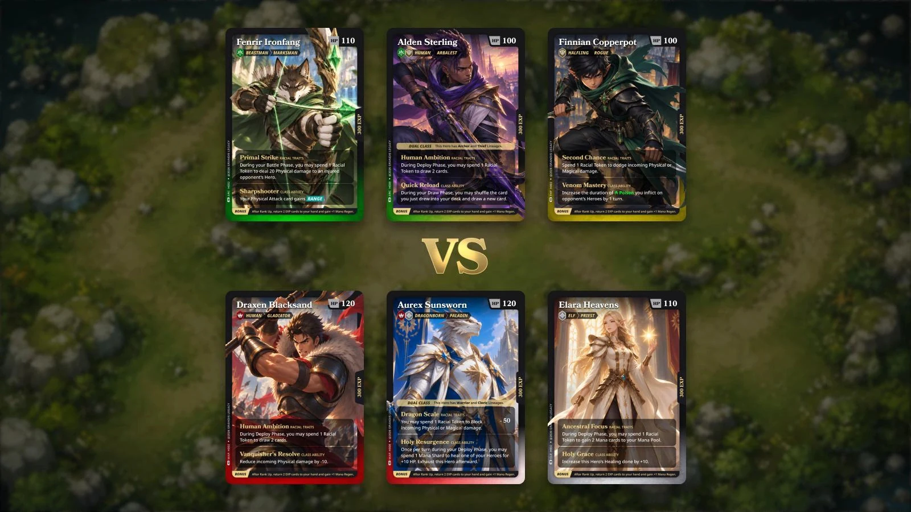
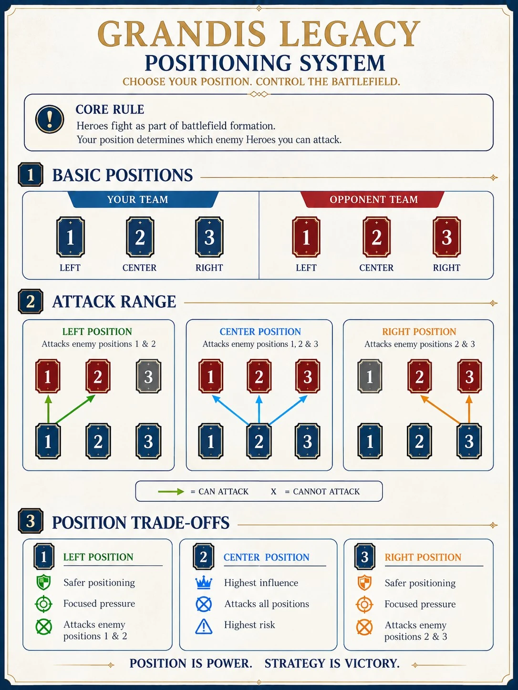
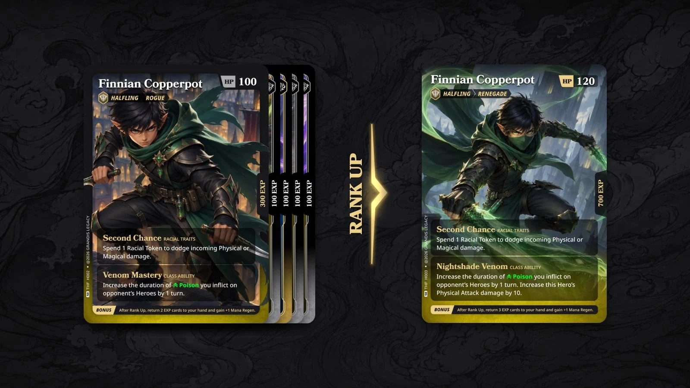
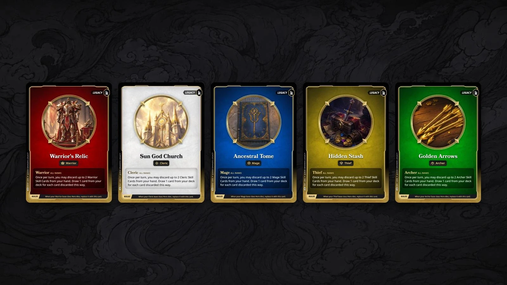

Deals Physical damage through an Attack.
GRANDIS LEGACY · SEASON 0
Player Rulebook
RPG-Style TCG · 3 Heroes per player
Version 3.5 · 20 November 2026 · English
Reading order: Chapters 1–10 explain the game from core concepts to advanced mechanics. Use Chapters 11–13 for Keywords, Status, Healing, and Quick Reference.
SEASON 0 · PAGE 3
1. Understanding Grandis Legacy
Grandis Legacy is an RPG-Style TCG focused on Hero progression, tactical positioning, Class-based play, and Legacy after defeat.
A standard match is played by two players, with each player using 3 Heroes.
Primary win condition
Defeat all 3 opposing Heroes.
Match Draw: Both players lose their last active Hero in the same Attack/Defense exchange.
Deck-out
If the Main Deck is empty and the mandatory Draw Phase draw cannot be performed, that player loses.
A Draw effect takes as many cards as are available, including 0, without causing an immediate loss. Deck-out occurs only when the mandatory Draw Phase draw cannot be performed.

SEASON 0 · PAGE 4
2. Heroes, Battlefield, and Core Components
Each player controls 3 Heroes in the Left, Center, and Right positions. A Hero's position, Rank, state, and attached game pieces determine what it can do.
| Hero Concept | Meaning |
|---|---|
| Hero Positions | Left, Center, and Right. Position determines the Hero's normal Area of Attack. |
| HP | A Hero is checked for Defeat when its HP reaches 0. |
| Rank | Heroes progress from Rank I to Rank III through EXP and Rank Up. |
| Ready | The Hero can perform legal active actions. |
| Exhausted | The Hero cannot perform normal active actions unless a rule or card explicitly allows it. |
| Attachment Slots | Each Hero has 2 slots for active Attachments. |
| Legacy | A defeated Hero. It has no HP, Rank, EXP, Status, Exhaust, or Attachment Slots. |
Game Areas & Components
| Area / Component | Function |
|---|---|
| Main Deck | Holds Skill, Item, and Event Cards. |
| Legacy Deck | Holds Hero Rank I-III and Legacy Cards. |
| Mana Deck | Holds Mana Cards. |
| Mana Pool | Holds available Mana Shards. |
| Discard Pile | Holds resolved or discarded cards. |
| Hand | Holds a player's private cards. |
| Racial Tokens | Used to activate Racial Traits. |
A Hero normally becomes Ready during its owner's Draw Phase. A Hero that is still Casting remains Exhausted.
Hero state follows the Hero: HP, EXP, Status, Attachments, and Exhaust stay with that Hero when Heroes swap positions.
SEASON 0 · PAGE 5
3. Decks, Cards, and Subtypes
Grandis Legacy uses three separate decks. Each deck has a different role and contains different cards.
The Three Decks
| Deck | Contents | Purpose |
|---|---|---|
| Main Deck | Exactly 50 cards: Skill, Item, and Event Cards. | Cards drawn into Hand and played during the game. |
| Legacy Deck | Exactly 12 cards from three Hero progression packages: Hero Rank I-III and Legacy Cards. | Holds your Heroes, Rank progression, and Legacy Cards. |
| Mana Deck | Exactly 12 Mana Cards: Regular and Color Mana Cards. | Supplies Mana to the Mana Pool. |
Main Deck Construction
Any mix of Skill, Item, and Event is allowed. Normal cards: maximum 3 copies. Special Event: maximum 1 copy of each card. Ultimate: maximum 1 per Hero, maximum 3 total. An Ultimate Card that becomes EXP or enters Discard cannot return to Hand or Main Deck.
Mana Deck Composition
Color Mana Cards of any color are allowed, with a maximum of 1 of each color. Fill the remaining slots with Regular Mana Cards.
Main Deck Cards
Rule terms used for Main Deck cards: Card Type → Card Subtype → Keyword → Card Text
| Card Type | Function |
|---|---|
| Skill | Class- and Rank-based actions used through Hero progression. |
| Item | Tools, consumables, protection, utility, or persistent buffs. |
| Event | Events that affect the game state. |
Attack Skill Types

Deals Magical damage through an Attack.

Does not choose targets. Automatically affects all opposing active Heroes within the user's Area of Attack.

Locks a target position and resolves later through Casting.
Other Skill Card Subtypes

Used during Response to protect a Hero or stop/modify an Attack.
Preparation, position swaps, draw, buffs, or disruption.
Healing, recovery, or other assistance.
Item Card Subtypes

Single-use recovery or immediate utility.

Special-purpose tools and effects.

Protective Items, commonly used during Response through BLOCK or DODGE.
Persistent or temporary beneficial Item effects.
Event Card Subtypes

Normal Event Card.
Maximum 1 copy of each Special Event Card per deck.
SEASON 0 · PAGE 6
4. Setup and Turn Structure
Game Setup
- Choose 3 Hero progression packages for your Legacy Deck.
- Place each Hero Rank I in the Left, Center, and Right positions.
- Shuffle the Main Deck.
- Build and shuffle the 12-card Mana Deck.
- Draw 5 cards as your Opening Hand.
- Draw 3 starting Mana Shards from the Mana Deck into your Mana Pool.
- Start with Mana Regen 1 and 2 Racial Tokens.
- Determine the first player and begin with the Draw Phase.
Turn Structure
| Phase | Available Actions (Default) |
|---|---|
| Draw | Ready Heroes, Draw, Mana Regen, update start-of-turn counters. |
| Deploy | Tactical / Support Skill, Item / Event, Legacy Ability, Reposition. |
| Battle | Attack Skill, Casting Release. |
| Reform | Support Skill, Item / Event, Legacy Ability, Tribute, Reposition. |
| End | Poison damage, reduce Status counters, increase Casting Time (if applicable), resolve other end-of-turn effects, Hand Limit (8). |
Timing Exceptions
| Card / Keyword | Timing |
|---|---|
| Defense Skill | Response Window. |
| Protection Item | Response Window. |
| Buff Item | Deploy Phase only. |
| REACTION | When its trigger occurs, during any Phase. |
Draw Phase: Ready Heroes; perform the mandatory Draw (or its replacement effect); then Mana Regen.
Response: Legal Responses can occur in any Phase, including for eligible Attacks, Items, Events, and Tactical Skills.
Timing: Card-specific timing overrides default timing. A Response Window is not a separate Phase.
First turn: The first player cannot Attack on their first turn and skips the mandatory Draw during their first Draw Phase. Mana Regen still occurs normally.
Draw and Hand
Draw means taking a card from the top of the Main Deck into your Hand through a Draw rule or effect. The Opening Hand, cards added through search or selection, and cards returned from Discard to Hand do not count as Drawn. Hand limit: maximum 8 cards at the end of the turn.
SEASON 0 · PAGE 7
5. Mana Pool and Card Use
A Mana Card is called a Mana Shard while it is in the Mana Pool or being used as Mana.
Mana Value
| Mana Shard | Payment Value |
|---|---|
| Regular Mana Shard | Counts as 1 Mana. |
| Color Mana Shard - matching Skill color | Counts as 2 Mana when its color matches the Skill Card. |
| Color Mana Shard - all other Mana payments | Counts as 1 Mana (including nonmatching Skills and Events). |
Mana Regen starts at 1 and increases by +1 each Rank Up (maximum 6). During Draw Phase, after the mandatory Draw or its replacement, take Mana Shards from the top of the Mana Deck equal to Mana Regen, up to 12 in the Mana Pool. If fewer are available, take as many as possible.
Paying Mana
Pay the required Mana cost using Mana Shards from your Mana Pool, based on their payment values.
Mana Return Cycle
Spent Mana Shards return as one batch to the bottom of their owner's Mana Deck, not to Discard. For Skill payments, order: Regular Mana Shard, nonmatching Color Mana Shard, then matching Color Mana Shard (deepest/last). Later batches go below earlier ones.
Removing Mana
When removing Mana, remove as many Mana Shards as possible from the affected Mana Pool, up to the stated number. Return them to the bottom of their owner's Mana Deck. Count Mana Shards, not their payment value.
Opponent Mana Selection
When an effect tells you to discard, remove, or choose Mana Shards from an opponent's Mana Pool, choose the required number face-down without checking their identity. Then resolve the effect.
Using Cards
| Card / Use | Rule |
|---|---|
| Skill | May be played only when Class, Rank, Lineage, and other stated requirements are met. For a REVIVE Skill, the Hero being revived may meet those requirements if the card allows it. When an active Hero uses a Skill, that Hero becomes Exhausted after paying required costs, unless the Skill has BUFF or the card states otherwise. |
| Event | A normal Event requires a legal Hero. After paying Mana and mandatory costs, that Hero becomes Exhausted. If the Event is later Negated, the Hero remains Exhausted. |
| Item | Does not Exhaust a Hero by default. The Hero using it must meet its requirements; it may target another Hero if allowed. |
| Defense / Reaction | Do not Exhaust a Hero. Normal card requirements still apply. |
A Hero may use Skills from earlier Classes in the same progression Lineage. Use the effect row that matches the Hero's Class and Rank. If there is no exact row, use the highest previous effect row available in that Lineage, as long as the Hero still meets the card requirements.
Ready Requirement
A Hero must be Ready to use any card or effect that causes it to become Exhausted. An already Exhausted Hero cannot use such cards or effects unless explicitly allowed.
Racial Tokens
Racial Token pool maximum: 2. A player may use at most 1 Racial Token during their active turn. A legal Racial Trait can still be used while its Hero is Exhausted unless the card states otherwise.
SEASON 0 · PAGE 8
6. Combat Basics
An active Hero's position determines its normal Area of Attack (AoA).
| Attacker Position | Normal Targets |
|---|---|
| Left | Left or Center. |
| Center | Left, Center, or Right. |
| Right | Center or Right. |
Keywords such as MELEE and RANGE can modify the normal Area of Attack.
Using an Attack Skill
- Choose an Attack Skill from Hand.
- Choose an active Hero that meets the Skill requirements.
- Choose a legal target if required.
- Pay Mana and any mandatory costs.
- Apply any required Exhaust.
- The opponent receives a Response opportunity.
- Resolve the Attack and its effects.
Targets and Area Attacks
- Non-Area Attacks choose a legal target unless the card selects one or requires no target.
- Choose all targets before paying costs. If fewer legal targets exist, affect only those available unless the card states otherwise.
- The defending player may respond separately for each affected Hero. Negating an Attack against one target does not cancel it against other targets.
Area Attacks do not choose targets. They automatically affect all opposing active Heroes within the user's Area of Attack.
Attack Effect Timing
Effects that do not depend on an Attack hitting or dealing damage resolve before its damage, unless the card states otherwise. Status inflicted by an Attack is applied after that Attack's damage, unless the card states otherwise.
Attack Hits and Damage
An Attack hits unless it is successfully Dodged or Negated. An Attack deals damage only if its final damage is greater than 0.
SEASON 0 · PAGE 9
7. Positioning System

This diagram shows the normal Left / Center / Right attack coverage. Keywords can modify this coverage.
Swap and Reposition
Swap exchanges the positions of two Heroes, including through card effects. Reposition is a manual Swap between adjacent positions (Left-Center or Center-Right).
| Manual Reposition | Result |
|---|---|
| Active Hero + Active Hero | Both active Heroes become Exhausted. |
| Active Hero + Legacy | Only the active Hero becomes Exhausted. |
| Legacy + Legacy | No Exhaust. |
HP, EXP, Status, Attachments, and Exhaust stay with the Hero when Heroes swap positions. If the Hero is Casting, cancel it and move the Casting Card to Discard.
Manual Reposition: maximum 1 per active turn across Deploy and Reform. A Swap caused by a card/effect does not use this limit or automatically Exhaust unless stated.
Automatic Center - 1v1: When each player has exactly 1 active Hero remaining, both Heroes automatically move to Center without Exhaust, even if affected by Freeze or Stun. While the game remains 1v1, both Heroes must stay in Center and cannot be moved by Reposition or Swap. This restriction ends when a Hero is revived.
SEASON 0 · PAGE 10
8. Response, Reaction, Attachment, and Casting
Response
Action played Choose legal Response Pay costs Opponent may respond Last card resolves first Original action continues
Responses can occur in any Phase whenever a legal Response Window opens, not only for Attacks. Eligible Items, Events, Tactical Skills, and other actions can also be responded to with legal cards. For Area or multi-target effects, respond separately for each affected Hero. Resolve the action and all Responses before checking Defeat and the match result.
Defense and Reaction
| Term | Rule |
|---|---|
| Defense | Used during Response. Unless the card states otherwise, a Defense Skill is used for the active Hero being attacked. That Hero must meet the Skill requirements. Defense does not Exhaust that Hero. |
| REACTION | A non-Defense card with REACTION can be used as a Response when its stated trigger occurs, in any Phase. It does not Exhaust a Hero. Normal card requirements still apply. |
Response Effects
| Term | Rule |
|---|---|
| Redirect | Changes the target of an Attack or effect according to the card text. |
| Negate | Stops a card or effect from resolving according to the card text. Ultimate Cards cannot be Negated unless a card explicitly allows it. |
| Repeated Attacks | Each Attack in a repeated sequence may be Negated with a separate legal Response. Negating one Attack does not cancel the others. |
Paid Costs and Negate
After Mana and other required costs are paid, any required Exhaust also applies. If the card is later Negated, those costs and Exhaust are not refunded.
Attachment
- Each Hero has 2 Attachment Slots.
- A card becomes an Attachment while its effect remains active.
- An immediate effect uses no Attachment Slot; a lasting INVINCIBLE effect does.
- A required slot must be available before the card is played.
- Attachments follow the Hero when Heroes swap positions.
- When an effect ends, is used up, or the Hero is defeated, the Attachment goes to Discard.
Casting
Casting locks a target position, not a Hero. Choose an opposing position when Casting is played; when released, it affects the Hero currently occupying that position.
- If the locked position contains a Legacy when Casting is released, the Casting ends without hitting a Hero or dealing damage.
- Casting uses an Attachment Slot and makes the Casting Hero Exhausted.
- If the Casting Hero changes position or is affected by Stun before release, the Casting is canceled.
- Sleep does not cancel an existing Casting. While the Casting Hero is asleep, its Casting Time does not increase and the Casting cannot be released.
- Timed Casting starts at 0. Casting Time increases by 1 during its owner's End Phase. Release the Attack during the Battle Phase when the required Casting Time is reached, unless the card states otherwise.
- Some Casting Cards do not use Casting Time. They become ready according to their card text, then follow the normal Casting release rules.
- After Casting resolves, the Casting Hero remains Exhausted until the next Draw Phase.
SEASON 0 · PAGE 11
9. Tribute and Rank Up
Tribute
Tribute converts 1 Skill Card from Hand into EXP for a chosen active Hero.
| Tribute Rule | Explanation |
|---|---|
| Timing | Reform Phase. |
| Limit | Maximum 1 normal Tribute each Reform Phase. |
| Printed Mana Cost | Not paid. |
| EXP Value | Normal Skill = 100 EXP. Ultimate = 200 EXP. |
| Ultimate Requirement | The Ultimate may only be Tributed to its specific living Hero owner, and you must spend 1 matching Color Mana Shard from the Mana Pool. |
Ultimate Tribute: both parts of the Ultimate Requirement must be satisfied at the same time. Printed Mana Cost is still ignored.
Rank Up
When a Hero's total EXP reaches the requirement for the next Rank, replace that Hero Card with the corresponding Rank card.
| EXP | New Rank | Rank Up Bonus |
|---|---|---|
| 300 | Rank II | Return 2 Skill Cards used as EXP to your Hand. Mana Regen +1. |
| 700 | Rank III | Return 3 Skill Cards used as EXP to your Hand. Mana Regen +1. |
EXP Card: A card placed beneath a Hero as EXP. It is considered an EXP Card only while it is beneath that Hero.
When Ranking Up: replace the Hero with the next Rank card. Return Skill Cards used as EXP that can be returned to your Hand according to the Rank Up Bonus. Move the rest to Discard. The Hero keeps its existing damage. Status, Attachment, Casting, and Exhaust remain with the Hero. Mana Pool does not increase immediately.

SEASON 0 · PAGE 12
10. Legacy Cards, Defeat, and Revive
What is a Legacy?
When a Hero is Defeated, place a Legacy Card on top of that Hero Card. Choose any available Legacy Card with the same Base Class (Rank I Class); it need not be from the defeated Hero's original package. A Legacy is a defeated Hero. It has no HP, Rank, EXP, Status, Exhaust, or Attachment Slots.
Legacy Timing: Legacy Abilities may be used only during Deploy or Reform. Each Legacy may use its Ability once per turn and does not become Exhausted.
Using a Legacy Ability
Choose Legacy Pay the required matching Skill Card from Hand Choose card/target if required Resolve the Ability
When a Hero is Defeated
- Attachments go to Discard.
- Status is cleared.
- All EXP Cards beneath the Hero go to Discard.
- Pending Casting is canceled and its Casting Card goes to Discard.
- The Hero keeps the Rank it had reached; inherent EXP remains: Rank I 0 / Rank II 300 / Rank III 700.
- If all 3 Heroes are defeated, that player loses, unless both players lose their last active Hero in the same Attack/Defense exchange (draw).
Revive
- Return the Legacy Card to the Legacy Deck.
- The Hero regains HP as stated on the Revive Card.
- EXP, Status, and Exhaust follow the Revive Card.

SEASON 0 · PAGE 13
11. Keywords
Keywords describe a card's special rules or effects. Card text specifies the amount, target, duration, or condition.
This Attack can only target an opposing active Hero in the directly opposite position.

This Attack can target Heroes outside its normal Area of Attack. Attacking outside that area counts as a Range Attack.
This Attack cannot be Blocked.
This Attack cannot be Dodged.

Reduces incoming Attack damage as stated on the card.

The Hero avoids the Attack.

Using this Skill or Event does not change the Hero's Ready or Exhausted state.

The card can only be used when the condition stated on the card is met.
May be used as a Response when its stated trigger occurs, during any Phase.

Restores HP as stated on the card.
Return the Legacy Card to the Legacy Deck. The Hero regains HP as stated on the Revive Card.
The Hero cannot take damage from an opponent or receive new Status from an opponent. Existing Status remains active.

Affects all opposing active Heroes, ignoring normal Area of Attack.

When this Hero is hit by an Attack, deal damage to the attacker as stated on the card.
Remove as many Mana Shards as possible from your opponent's Mana Pool, up to the number stated on the card.

Remove as many Mana Shards as possible from your opponent's Mana Pool, up to the number stated on the card. Then take as many Mana Shards as possible from your Mana Deck into your Mana Pool, up to the number removed.
Buff Item is a Card Subtype. BUFF is a Keyword. They are separate rules terms.
View original PDF · page 13SEASON 0 · PAGE 14
12. Status and Healing
Status follows its Hero when Heroes swap positions and does not use Attachment Slots. Legacy cannot receive Status.
| Status | Effect |
|---|---|
| Bleed | This Hero cannot receive Healing. Bleed does not deal damage. |
| When this Hero is hit by an Attack or takes damage from a Card or Ability, increase that damage by 10. | |
| This Hero cannot DODGE or swap positions. | |
| This Hero takes 10 damage during its owner's End Phase. | |
| This Hero cannot use Skill or Event Cards, except Skills with DODGE. It wakes up when hit by another Attack. | |
| Stun | This Hero cannot use Skill or Event Cards, activate Racial Traits or Class Abilities, BLOCK, DODGE, or swap positions. |
Status Duration: duration decreases by 1 during that Hero owner's End Phase and ends at 0. Poison deals damage before its duration decreases.
Status Stacking: Reapplying a Status adds its new duration to the remaining duration, up to 6 counters per Status per Hero. Stacking increases duration, not effect strength.
Invincible and Existing Status
Invincible does not remove, pause, or cleanse an existing Status. Existing Status remains active and its duration continues normally.
If an existing Poison came from an opponent, its Poison damage is prevented while Invincible is active. If Poison remains after Invincible ends, its damage applies normally on the next applicable End Phase.
Healing
- Healing cannot exceed Max HP.
- Single-target Healing requires a damaged Hero without Bleed.
- For multi-target Healing, full-HP Heroes, defeated Heroes, and Heroes with Bleed are skipped.
- Apply Healing Done and Healing Received modifiers when applicable.
SEASON 0 · PAGE 15
13. Quick Reference
| Topic | Short Rule |
|---|---|
| Win | Defeat all 3 opposing Heroes; simultaneous last-Hero defeat in one Attack/Defense exchange is a draw. |
| Deck-out | Lose only when the mandatory Draw cannot be performed because the Main Deck is empty. |
| Main Deck | Exactly 50 cards: Skill, Item, Event. |
| Legacy Deck | Exactly 12 cards from three Hero progression packages: Hero Rank I-III and Legacy Cards. |
| Copy Limits | Normal: maximum 3 copies; Special Event: maximum 1 copy each; Ultimate: maximum 1 per Hero, maximum 3 total. |
| Mana Deck | Exactly 12 Mana Cards; any Color Mana allowed; maximum 1 of each color; rest Regular Mana Cards. |
| Opening | Opening Hand 5; 3 starting Mana Shards; Mana Regen starts at 1. |
| Turn | Draw > Deploy > Battle > Reform > End. |
| Mana | Regular Mana Shard = 1 Mana; matching Color Mana Shard = 2 Mana; otherwise 1 Mana. |
| Mana Regen | Each Rank Up gives +1, maximum 6. |
| Area of Attack | Left: Left/Center; Center: all; Right: Center/Right. |
| MELEE / RANGE | MELEE: opposite only. RANGE: reach outside AoA; attacks outside AoA count as Range Attacks. |
| Manual Reposition | Maximum 1 per active turn during Deploy/Reform; Swaps from card effects do not count. |
| 1v1 Auto Center | Both Heroes stay in Center during 1v1 until a Hero is revived; Freeze and Stun do not prevent this. |
| Defense | Used during Response by default. |
| REACTION | Can be used as a Response when its stated trigger occurs, in any Phase. |
| Event | A normal Event requires a legal Hero and Exhausts that Hero after paying Mana and mandatory costs. |
| Item | Does not Exhaust a Hero by default. |
| Tribute | Normal Skill = 100 EXP. Ultimate = 200 EXP; requires Hero owner + matching Color Mana Shard. |
| Rank Up | Return eligible Skill Cards used as EXP according to the Rank Up Bonus; discard the rest; Mana Regen +1. |
| Attachment | 2 slots per Hero. |
| Legacy | On defeat choose an available Legacy with matching Base Class; Legacy Ability may be used only during Deploy/Reform. |
| Racial Token | Maximum 2; use at most 1 during the active turn. |
| Status Stacking | All Statuses stack, up to 6 counters per Status per Hero. |
Three Main Flows
Attack
Choose card Choose legal Hero Target(s), if required Pay costs / Exhaust Response Resolve
Rank Up
Tribute Gain EXP Rank Up Return Skill Cards Discard the rest Mana Regen +1
Defeat
HP reaches 0 Check defeat prevention Discard EXP and Attachments; clear Status Choose matching Base Class Legacy
Hand and Search
- Hand is private.
- After searching or viewing the Main Deck, shuffle unless a card states otherwise.
- A Draw effect takes as many cards as are available, including 0, without causing an immediate loss.
- When cards return to the Main Deck, shuffle unless their placement is specified or the card states otherwise.